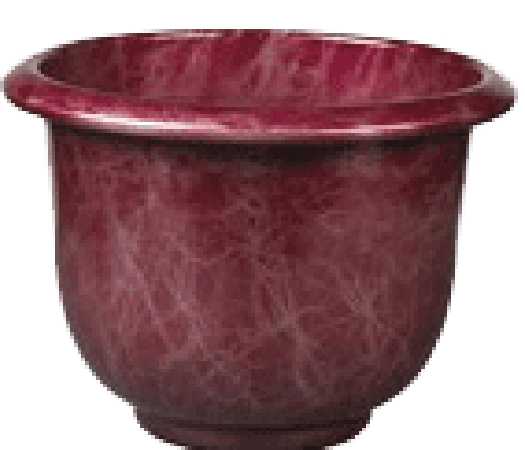
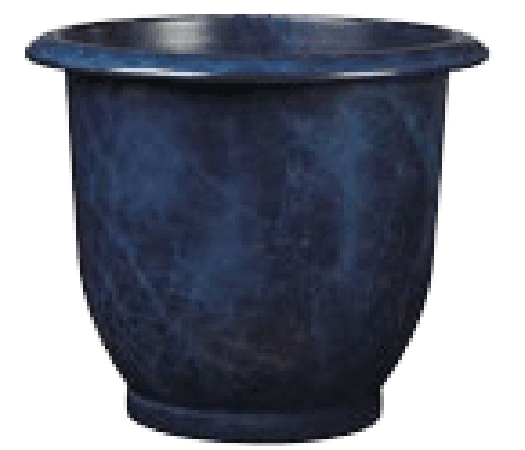
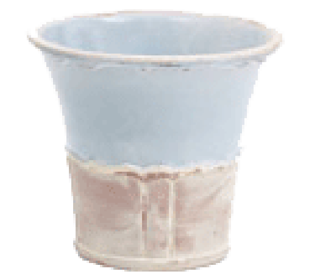
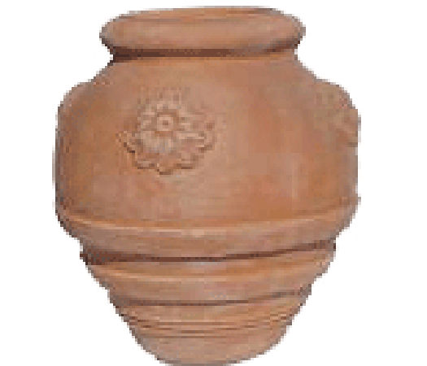
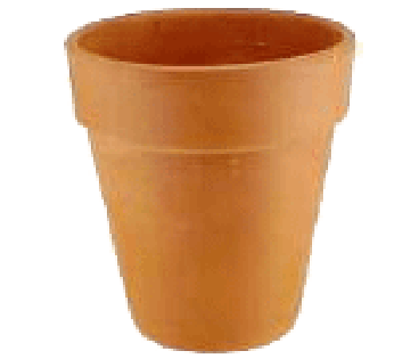
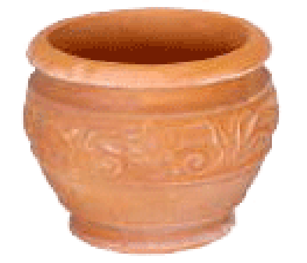
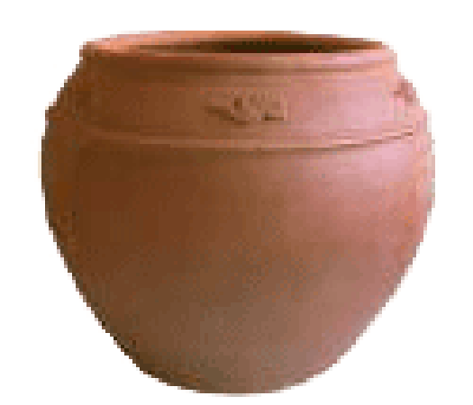

| Name | Description | Image |
|---|---|---|
| Red Earth | This ceramic pot is hand crafted from the finest materials so that each one is unique. The pots are coated to increase durability. |  |
| Night Sky | This glazed ceramic pot is available in lighter and darker shades. These are especially well suited to formal gardens. |  |
| Country Planter | The more traditional look of this pot with its glaze design and decorative pattern will make it ideal for an informal outdoors setting. |  |
| Chinese Clay Flower Pot | This imported pot stands a little over 40 cm in height. The sealed finish makes it suitable for outdoor use |  |
| Italian Terracotta | A very traditional looking 20 cm high pot, with a narrow design, making it perfect for long stemmed flowers. |  |
| Carved Terracotta | The carved design on this small pot can add some class to an entrance area or office setting |  |
| Classic Clay | A classic design available with a glazed finish to make it suitable for your outdoor patio. |  |
Home About Us~ Contact Us~ View the Gallery~ Related Links~ Place an Order